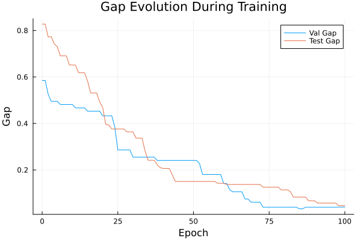
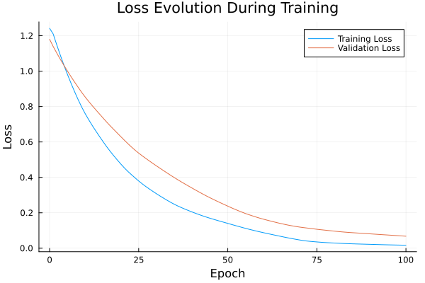

Basic Tutorial: Training with FYL on Argmax Benchmark
This tutorial demonstrates the basic workflow for training a policy using the Perturbed Fenchel-Young Loss algorithm.
Setup
using DecisionFocusedLearningAlgorithms
using DecisionFocusedLearningBenchmarks
using MLUtils: splitobs
using PlotsCreate Benchmark and Data
b = ArgmaxBenchmark()
dataset = generate_dataset(b, 100)
train_data, val_data, test_data = splitobs(dataset; at=(0.3, 0.3, 0.4))(DecisionFocusedLearningBenchmarks.Utils.DataSample{@NamedTuple{}, @NamedTuple{}, Matrix{Float32}, Vector{Float32}, Vector{Float32}}[DataSample(x=Float32[1.26254 -0.150607 … 1.3011 1.53404; 0.699333 0.717051 … -1.40546 1.6416; … ; 0.996235 0.80916 … 0.495329 1.51875; -0.251767 -0.560897 … -0.631705 0.456428], θ=Float32[-0.549178, -1.12976, -1.72852, 0.0964773, 1.38438, 0.607304, -0.245011, 2.49233, 0.610139, -1.80075], y=Float32[0.0, 0.0, 0.0, 0.0, 0.0, 0.0, 0.0, 1.0, 0.0, 0.0]), DataSample(x=Float32[-1.43904 -0.649566 … 2.06239 -0.116253; 0.692973 -0.265261 … -0.438918 0.812256; … ; -1.0742 -0.481709 … 0.3796 -0.538115; 0.599502 -1.19634 … 0.118263 0.434983], θ=Float32[0.0591641, 0.304145, 1.32334, -0.222647, 2.33526, -0.352729, 0.144398, -2.67908, 0.0725704, 0.0276366], y=Float32[0.0, 0.0, 0.0, 0.0, 1.0, 0.0, 0.0, 0.0, 0.0, 0.0]), DataSample(x=Float32[0.855553 0.586756 … -1.08942 0.562538; -1.93633 1.0193 … 0.715002 -0.547613; … ; -1.78528 1.07484 … -0.133239 0.976632; -0.379431 0.636623 … -1.13038 1.10385], θ=Float32[2.85931, -1.1162, -0.367919, -1.211, 0.772738, 1.60096, 1.08424, 0.0597926, -0.294127, -0.39346], y=Float32[1.0, 0.0, 0.0, 0.0, 0.0, 0.0, 0.0, 0.0, 0.0, 0.0]), DataSample(x=Float32[-0.734382 -0.461887 … -0.123896 2.57255; 0.725796 -0.914516 … -0.842708 1.05788; … ; -0.251649 -0.741877 … -1.2218 0.22621; 0.966246 -0.780289 … 0.341277 -0.537321], θ=Float32[0.0931522, 1.11835, 0.954501, -1.18372, -0.136696, -2.01284, 1.39848, -0.058378, 1.95454, -0.388002], y=Float32[0.0, 0.0, 0.0, 0.0, 0.0, 0.0, 0.0, 0.0, 1.0, 0.0]), DataSample(x=Float32[0.0365484 0.433447 … -1.40887 0.841221; 2.3348 1.02551 … 1.14299 -0.175233; … ; -0.374521 -0.201872 … 0.41541 -0.0412563; 0.929864 -0.171774 … -1.18433 -1.99344], θ=Float32[-1.39643, -0.364887, 1.43716, 1.08206, -0.148213, -0.90361, 0.227997, 0.357293, -0.932433, 0.0794985], y=Float32[0.0, 0.0, 1.0, 0.0, 0.0, 0.0, 0.0, 0.0, 0.0, 0.0]), DataSample(x=Float32[0.210859 0.605716 … -0.128812 0.00186319; 2.1002 0.202403 … 1.05909 0.366864; … ; -0.11312 1.64811 … -0.349486 1.35243; 0.608146 -1.24797 … 1.30854 -1.25351], θ=Float32[-1.15323, -0.74967, -0.0634555, -1.81785, -0.0613055, -0.171345, 1.17995, 0.514385, -0.624347, -0.961618], y=Float32[0.0, 0.0, 0.0, 0.0, 0.0, 0.0, 1.0, 0.0, 0.0, 0.0]), DataSample(x=Float32[-2.02584 0.821489 … -0.136904 1.10941; 0.178481 -1.14743 … -0.448884 0.719492; … ; 1.24896 -0.0875125 … -0.783275 0.621727; -0.740484 2.19255 … 0.401096 -0.295518], θ=Float32[-1.6575, 0.263006, -1.05177, 0.0649707, -1.25239, 0.396424, 0.495169, -1.75677, 0.543216, -0.369125], y=Float32[0.0, 0.0, 0.0, 0.0, 0.0, 0.0, 0.0, 0.0, 1.0, 0.0]), DataSample(x=Float32[-0.450562 -0.180135 … 0.88852 -1.67904; -2.01286 0.419482 … 0.231662 -0.165484; … ; -1.98866 -1.20113 … 0.637138 -0.775226; 1.19661 -0.375596 … 0.611909 0.35722], θ=Float32[2.49608, 0.932638, -0.424969, 0.544468, 0.166479, 0.854415, -1.39343, 0.385904, -0.890823, -0.116415], y=Float32[1.0, 0.0, 0.0, 0.0, 0.0, 0.0, 0.0, 0.0, 0.0, 0.0]), DataSample(x=Float32[-0.181186 -0.980151 … -0.316865 2.74643; 2.28812 1.56071 … -3.20444 0.965322; … ; -1.22209 0.105422 … -0.415338 1.11828; 1.71196 -2.3632 … 0.400383 -0.563925], θ=Float32[-0.355477, -0.0994433, 1.26428, -0.305284, 0.382373, -0.410601, 0.209904, -0.90493, 1.40706, -0.665213], y=Float32[0.0, 0.0, 0.0, 0.0, 0.0, 0.0, 0.0, 0.0, 1.0, 0.0]), DataSample(x=Float32[1.03576 0.978905 … -1.47817 0.287295; -0.582621 1.502 … -0.147574 -0.0463391; … ; 0.279679 0.73804 … 0.11457 0.491848; 0.731264 1.7195 … 0.262518 0.416061], θ=Float32[-0.170741, -1.17297, -0.384057, -0.470205, 0.71511, -0.199698, -0.783401, -0.235309, -1.14522, -0.229464], y=Float32[0.0, 0.0, 0.0, 0.0, 1.0, 0.0, 0.0, 0.0, 0.0, 0.0]) … DataSample(x=Float32[0.986196 0.18061 … -0.29471 -0.164493; -1.50456 0.096022 … 1.37452 0.38961; … ; -0.298083 0.0585181 … -0.693737 0.918584; -0.77003 0.540246 … -1.97899 0.478549], θ=Float32[2.01969, -0.560335, -0.249882, 0.730585, -1.43362, 0.459221, 1.1429, -1.71129, 0.899113, -0.860762], y=Float32[1.0, 0.0, 0.0, 0.0, 0.0, 0.0, 0.0, 0.0, 0.0, 0.0]), DataSample(x=Float32[0.835464 -0.720161 … -0.341712 -0.31259; 0.994953 -1.11394 … 0.161742 -2.10571; … ; 1.50842 -0.389414 … 1.24071 0.00521479; -0.173746 0.359041 … -1.65376 1.29727], θ=Float32[-1.39706, 0.321074, -2.22006, -0.21724, 0.270678, 0.665551, -0.344613, -0.36016, -0.746609, 0.613521], y=Float32[0.0, 0.0, 0.0, 0.0, 0.0, 1.0, 0.0, 0.0, 0.0, 0.0]), DataSample(x=Float32[0.91574 -0.854078 … 1.00837 0.32008; 0.265292 0.434135 … -0.350048 0.302943; … ; 1.40158 1.08962 … 2.04792 0.25825; 2.11513 -1.08291 … 0.771531 -0.145662], θ=Float32[-1.3459, -1.30689, -0.359562, 2.46612, 2.76238, 1.98409, -0.0776835, -0.724076, -0.700013, -0.19649], y=Float32[0.0, 0.0, 0.0, 0.0, 1.0, 0.0, 0.0, 0.0, 0.0, 0.0]), DataSample(x=Float32[0.0597942 1.08173 … -2.09287 1.3612; 0.563409 1.0437 … 1.35825 1.48693; … ; 0.683216 0.010046 … 0.552694 0.613242; -0.0471616 0.823735 … 1.2071 -0.813428], θ=Float32[-1.04037, -0.252458, 0.00994982, 1.59288, -2.21849, -0.254998, 0.890772, 1.01093, -2.25422, -0.584142], y=Float32[0.0, 0.0, 0.0, 1.0, 0.0, 0.0, 0.0, 0.0, 0.0, 0.0]), DataSample(x=Float32[0.865652 1.01094 … 0.212368 -1.13112; -0.140218 -2.13452 … 0.567564 0.506935; … ; -0.722723 0.0612169 … 0.327397 -1.26351; 0.0814208 -0.255203 … 0.492793 0.140714], θ=Float32[0.955423, 1.04009, 2.61045, 0.740675, -1.52732, -0.5639, 0.494945, -0.430493, -0.694407, 0.87974], y=Float32[0.0, 0.0, 1.0, 0.0, 0.0, 0.0, 0.0, 0.0, 0.0, 0.0]), DataSample(x=Float32[2.49644 -0.108593 … -0.512361 0.46583; -0.111718 -0.763432 … 0.47523 -0.491412; … ; -0.124735 -0.156296 … 0.011554 0.698235; 1.71073 1.29398 … -1.37437 -1.01579], θ=Float32[0.665469, 0.413869, 0.0790679, -0.978036, 0.756923, 1.44825, 0.185558, 1.06684, -0.214583, -0.506941], y=Float32[0.0, 0.0, 0.0, 0.0, 0.0, 1.0, 0.0, 0.0, 0.0, 0.0]), DataSample(x=Float32[-0.498572 0.935545 … -1.8573 -0.625041; 2.12155 0.696095 … 0.488135 -1.7186; … ; 0.463463 -1.88882 … 0.67832 -0.287526; 1.058 0.197275 … 0.07282 0.81324], θ=Float32[-2.51107, 0.616388, 0.308745, -1.12016, -1.35449, 0.381353, -1.09829, -1.47855, -1.86343, 1.27877], y=Float32[0.0, 0.0, 0.0, 0.0, 0.0, 0.0, 0.0, 0.0, 0.0, 1.0]), DataSample(x=Float32[0.832484 -1.25681 … -0.351174 0.181219; 0.521052 -1.05054 … 0.698045 0.178909; … ; -0.0103938 -0.0791579 … 1.50877 -0.293562; 1.28261 -1.47743 … -0.954105 -0.198777], θ=Float32[0.444371, 0.143463, -0.200446, 0.403407, -0.65409, -1.04919, 1.36305, -0.894471, -1.44755, 0.162627], y=Float32[0.0, 0.0, 0.0, 0.0, 0.0, 0.0, 1.0, 0.0, 0.0, 0.0]), DataSample(x=Float32[0.443125 0.0315966 … -0.877802 0.945167; 0.470736 -0.0154587 … -1.50952 1.33926; … ; 0.361232 0.438375 … -1.47974 -1.55971; -1.43263 -2.53001 … -1.6699 1.66442], θ=Float32[0.304002, 0.907053, 0.233459, 0.514955, -0.869938, 0.35811, -0.326189, 0.655573, 2.72665, -0.0641575], y=Float32[0.0, 0.0, 0.0, 0.0, 0.0, 0.0, 0.0, 0.0, 1.0, 0.0]), DataSample(x=Float32[0.533801 1.01237 … -0.773232 0.799725; -0.970662 -1.36111 … 0.939963 0.206244; … ; 0.178985 -1.66325 … 0.378357 0.556562; 1.92741 -0.251994 … -0.344166 -0.830822], θ=Float32[-0.436743, 2.39299, 0.841401, -1.11724, 0.454715, -1.83792, 0.574813, 0.531375, -0.724391, -0.0532581], y=Float32[0.0, 1.0, 0.0, 0.0, 0.0, 0.0, 0.0, 0.0, 0.0, 0.0])], DecisionFocusedLearningBenchmarks.Utils.DataSample{@NamedTuple{}, @NamedTuple{}, Matrix{Float32}, Vector{Float32}, Vector{Float32}}[DataSample(x=Float32[0.567645 -0.0786096 … 0.690804 -0.139348; 0.119728 -0.50475 … -2.84112 0.829507; … ; 0.448719 0.450806 … 0.452599 0.282529; 1.04998 0.136672 … 1.41682 0.749123], θ=Float32[-0.320636, 0.00892943, 1.74889, -0.356159, 1.41755, -0.339487, 1.87401, -0.0104748, 1.01438, -0.870997], y=Float32[0.0, 0.0, 0.0, 0.0, 0.0, 0.0, 1.0, 0.0, 0.0, 0.0]), DataSample(x=Float32[0.356595 1.99862 … 0.340185 -1.81548; 1.77577 0.173105 … -1.19178 -0.0818648; … ; 0.238593 0.797344 … -0.246078 1.97575; 0.235626 0.796556 … 0.804588 1.04899], θ=Float32[-1.49631, -0.143429, -0.293214, -1.8678, -0.353717, -0.36452, -1.35723, 0.306627, 0.897861, -2.39426], y=Float32[0.0, 0.0, 0.0, 0.0, 0.0, 0.0, 0.0, 0.0, 1.0, 0.0]), DataSample(x=Float32[1.12613 -1.34749 … 0.960585 0.975403; 1.7999 0.667251 … -0.838572 0.185853; … ; -0.903495 -0.784971 … -1.83949 0.402205; -1.17806 -0.67979 … -0.0734759 -1.48139], θ=Float32[0.663302, 0.230835, -0.319592, 0.887432, -1.07987, 0.636194, -0.307213, -0.036746, 2.06211, 0.0462146], y=Float32[0.0, 0.0, 0.0, 0.0, 0.0, 0.0, 0.0, 0.0, 1.0, 0.0]), DataSample(x=Float32[-0.215311 0.0188364 … -1.81143 0.0930998; 1.02926 -0.820171 … -2.01906 -0.00386223; … ; -0.37988 1.33654 … -0.153628 0.649045; -1.26294 -0.0707051 … 0.188717 0.0214991], θ=Float32[0.156918, -0.91273, 1.02808, 1.71936, -1.50221, -1.26816, -0.166646, 0.253159, 1.08569, -0.241383], y=Float32[0.0, 0.0, 0.0, 1.0, 0.0, 0.0, 0.0, 0.0, 0.0, 0.0]), DataSample(x=Float32[1.65279 1.65548 … -0.689016 -0.621266; -0.773975 -1.06357 … 0.819688 -0.153705; … ; -0.177753 0.196664 … 0.154731 0.179486; -0.256534 0.228978 … 0.850004 -0.546233], θ=Float32[1.20705, 0.956923, 2.49768, 0.6774, 0.563856, 1.20007, -0.0617735, 0.86416, -0.866072, -0.21563], y=Float32[0.0, 0.0, 1.0, 0.0, 0.0, 0.0, 0.0, 0.0, 0.0, 0.0]), DataSample(x=Float32[-0.77685 0.180382 … -1.17634 -0.20053; 0.125914 -0.515854 … 2.15734 -1.44844; … ; -0.888322 0.82655 … -0.026204 -0.0891923; 0.106501 2.88902 … 0.208994 -0.332406], θ=Float32[1.30832, -0.880712, 1.58009, -1.91261, -0.144097, -0.477469, -0.725309, -0.912024, -1.52607, 0.63438], y=Float32[0.0, 0.0, 1.0, 0.0, 0.0, 0.0, 0.0, 0.0, 0.0, 0.0]), DataSample(x=Float32[0.250984 0.225041 … 0.691749 1.99076; -0.651982 0.584073 … 1.0696 -1.82393; … ; -1.33354 0.906393 … 1.89398 0.584583; -0.36114 0.0815661 … 1.93176 -0.237337], θ=Float32[1.52176, -0.460655, 1.54557, 0.821128, 1.21077, 0.879796, 1.08575, 0.216535, -2.31353, 0.570687], y=Float32[0.0, 0.0, 1.0, 0.0, 0.0, 0.0, 0.0, 0.0, 0.0, 0.0]), DataSample(x=Float32[-1.58261 0.396351 … -1.47363 -0.474891; 0.0629073 0.194543 … 0.170644 1.4012; … ; 0.631003 0.730911 … -1.89734 0.685669; -1.01691 0.353515 … -1.94584 -0.97807], θ=Float32[-0.670506, -0.883508, -0.65063, -1.90424, -0.526591, 1.52419, 0.0899857, 0.284418, 1.08573, -1.1757], y=Float32[0.0, 0.0, 0.0, 0.0, 0.0, 1.0, 0.0, 0.0, 0.0, 0.0]), DataSample(x=Float32[1.38818 -0.637009 … -0.36764 0.0967798; -1.3908 -0.756531 … 0.797677 -0.472221; … ; -1.28257 0.842652 … -0.0784388 0.592211; 0.921452 0.654704 … 1.24728 -0.69116], θ=Float32[0.917124, -0.0263998, 0.593532, -1.16418, -0.379883, -1.55909, 1.25618, 0.0350831, -0.565024, -0.383406], y=Float32[0.0, 0.0, 0.0, 0.0, 0.0, 0.0, 1.0, 0.0, 0.0, 0.0]), DataSample(x=Float32[0.667239 0.164829 … -0.00428743 -0.892925; -0.662843 -0.956051 … -0.317369 -1.22044; … ; -0.320017 1.00153 … 1.58822 0.712569; -0.797971 -0.487213 … -0.668428 -2.60138], θ=Float32[1.16595, 0.265036, 0.00674483, -0.513493, -0.354872, 1.14552, -0.328429, -0.409421, -1.02483, 0.0782116], y=Float32[1.0, 0.0, 0.0, 0.0, 0.0, 0.0, 0.0, 0.0, 0.0, 0.0]) … DataSample(x=Float32[-0.00251886 -1.29931 … 0.42726 -0.211236; 0.377637 1.60415 … 1.76575 1.28384; … ; -0.241616 -0.0258161 … -0.0870095 1.81732; -0.344341 -0.506384 … -0.0637548 -0.367033], θ=Float32[0.166064, -1.63339, -0.560683, 0.831008, 0.0253448, -1.46173, -0.558082, -0.665786, -0.468839, -2.28207], y=Float32[0.0, 0.0, 0.0, 1.0, 0.0, 0.0, 0.0, 0.0, 0.0, 0.0]), DataSample(x=Float32[0.312715 0.198572 … 1.41737 0.0231556; -0.967417 -0.364738 … -1.7559 1.44449; … ; 1.63076 -0.947974 … -0.143938 -0.214506; 1.78081 1.30567 … 0.9775 0.252812], θ=Float32[-0.93845, 1.04583, -1.12703, 1.15764, -0.0992999, 2.46512, 0.357265, 0.279979, 0.519971, -0.272569], y=Float32[0.0, 0.0, 0.0, 0.0, 0.0, 1.0, 0.0, 0.0, 0.0, 0.0]), DataSample(x=Float32[-0.0415498 -0.587966 … 1.49475 0.649609; -0.409897 1.81141 … -0.0330726 -0.289916; … ; -0.12101 0.455936 … -1.31086 -0.00856284; -0.0214818 0.703737 … -0.0754427 -0.995543], θ=Float32[0.501202, -1.74931, -0.14335, -0.382971, -1.4107, 1.43901, -0.355307, -1.66158, 1.48259, 0.708381], y=Float32[0.0, 0.0, 0.0, 0.0, 0.0, 0.0, 0.0, 0.0, 1.0, 0.0]), DataSample(x=Float32[0.589274 0.523558 … 0.140118 0.343703; -1.31937 0.523218 … -0.661125 1.72816; … ; -1.62036 0.664172 … 0.174684 0.3775; -1.50762 0.434792 … 0.841413 0.430588], θ=Float32[2.33819, -1.38841, -0.0270813, -1.7464, -1.59988, 0.263168, 1.35166, 0.290186, -0.0524703, -1.75208], y=Float32[1.0, 0.0, 0.0, 0.0, 0.0, 0.0, 0.0, 0.0, 0.0, 0.0]), DataSample(x=Float32[-1.18823 -2.54191 … -0.87193 2.48375; -0.969133 0.624164 … 0.548483 0.300805; … ; -0.751208 -0.0016225 … 0.942358 -1.48357; 0.84207 -1.23174 … 1.0564 0.159499], θ=Float32[0.0909796, -0.570526, 0.855511, 0.656978, -0.85699, 1.42284, -0.142232, -0.274846, -1.52508, 1.73911], y=Float32[0.0, 0.0, 0.0, 0.0, 0.0, 0.0, 0.0, 0.0, 0.0, 1.0]), DataSample(x=Float32[0.878109 0.305826 … -0.268788 0.796889; 1.24839 0.507049 … -1.6575 -1.0427; … ; 1.19816 -0.177263 … 0.989668 0.0470156; 1.02291 -0.0946474 … 0.241769 -2.03031], θ=Float32[-2.11988, -0.0105613, -1.62886, -0.563179, 0.656544, 0.89024, -1.05074, 0.914917, 0.248049, 1.59951], y=Float32[0.0, 0.0, 0.0, 0.0, 0.0, 0.0, 0.0, 0.0, 0.0, 1.0]), DataSample(x=Float32[0.654176 -1.04494 … 0.786779 0.363256; -1.64181 0.269794 … 1.7976 -0.578524; … ; 0.886547 0.57464 … -1.37038 -0.0982645; -0.0244874 0.620663 … -0.474567 -0.293336], θ=Float32[0.858326, -0.864811, 0.786625, -0.134292, -0.580208, -0.0726565, -1.44635, -0.361355, 0.940029, 0.986537], y=Float32[0.0, 0.0, 0.0, 0.0, 0.0, 0.0, 0.0, 0.0, 0.0, 1.0]), DataSample(x=Float32[-1.36025 2.75733 … -0.338523 2.23262; -2.31041 -0.553121 … -0.330296 0.850704; … ; 0.806327 0.138187 … 0.0242937 0.325541; -0.543431 0.808142 … 0.37256 -0.599033], θ=Float32[-0.283678, 1.22628, 1.65964, 0.544181, 0.830896, 0.613196, -2.41445, -1.48837, 0.635541, 0.155495], y=Float32[0.0, 0.0, 1.0, 0.0, 0.0, 0.0, 0.0, 0.0, 0.0, 0.0]), DataSample(x=Float32[-0.333707 0.396388 … -0.944994 1.94615; -0.606513 1.06728 … 1.11215 -1.52791; … ; -0.983797 -1.10147 … -0.86573 -0.137022; -1.29318 0.140681 … 1.00528 -2.55428], θ=Float32[1.22089, 0.532524, 0.330219, 0.891148, -0.226574, -0.973594, -0.824931, 1.25601, -0.42942, 2.12304], y=Float32[0.0, 0.0, 0.0, 0.0, 0.0, 0.0, 0.0, 0.0, 0.0, 1.0]), DataSample(x=Float32[-1.06359 0.00201801 … -1.3809 -0.392788; 1.33651 -1.37198 … 1.96571 0.307064; … ; -4.57592 -1.62809 … 1.09962 1.24769; 0.387414 -0.394071 … 1.15884 -1.40494], θ=Float32[2.78114, 1.56678, -0.481254, -0.37027, 1.00077, -0.9837, -0.0208451, -0.707942, -2.84809, -1.57814], y=Float32[1.0, 0.0, 0.0, 0.0, 0.0, 0.0, 0.0, 0.0, 0.0, 0.0])], DecisionFocusedLearningBenchmarks.Utils.DataSample{@NamedTuple{}, @NamedTuple{}, Matrix{Float32}, Vector{Float32}, Vector{Float32}}[DataSample(x=Float32[-0.572685 -0.973161 … 0.561324 -0.0199002; 1.10547 -0.949263 … -1.82827 -1.24898; … ; -1.06608 -0.879923 … -0.57177 1.53032; 1.89482 -0.949371 … -1.19676 -0.737837], θ=Float32[-0.784242, 1.14783, -0.0857985, 0.811938, 1.11039, 3.39485, -0.754264, 1.27815, 2.22148, -0.796106], y=Float32[0.0, 0.0, 0.0, 0.0, 0.0, 1.0, 0.0, 0.0, 0.0, 0.0]), DataSample(x=Float32[0.680285 -0.0614758 … -0.293395 0.397041; 0.625472 -1.78698 … -0.0158725 1.33632; … ; -0.60542 0.28749 … 1.11264 -1.101; -0.00426377 0.0183381 … 0.784555 0.778966], θ=Float32[-0.0866531, 0.972793, -0.404976, -1.25457, -0.1885, -0.638791, 1.3081, 1.14002, -0.53014, -0.058031], y=Float32[0.0, 0.0, 0.0, 0.0, 0.0, 0.0, 1.0, 0.0, 0.0, 0.0]), DataSample(x=Float32[-0.0890526 -1.69699 … -0.661641 0.337378; -0.291966 -0.0509944 … 0.30462 -0.0101595; … ; -0.439554 -0.413693 … 0.021593 0.707776; 0.793654 -0.417247 … 0.15229 -1.53809], θ=Float32[-0.234209, 0.401271, 0.755561, -0.0661378, 0.729129, 0.0584832, -0.894593, -1.55943, -0.455471, 0.250433], y=Float32[0.0, 0.0, 1.0, 0.0, 0.0, 0.0, 0.0, 0.0, 0.0, 0.0]), DataSample(x=Float32[0.963648 -0.0316174 … -0.0755706 0.899416; -0.457468 -0.133305 … -1.62439 0.294544; … ; -0.0329491 -1.31697 … 0.168864 -0.601444; 0.430285 1.45813 … -0.766078 0.0384038], θ=Float32[0.422166, 1.03143, 1.08508, 0.294512, -0.664142, -0.0409228, -2.27436, 0.772899, 0.484471, 0.280683], y=Float32[0.0, 0.0, 1.0, 0.0, 0.0, 0.0, 0.0, 0.0, 0.0, 0.0]), DataSample(x=Float32[1.16544 -1.12447 … -0.968428 2.65039; 1.52367 -0.362278 … 0.0719586 -1.38273; … ; 2.31512 0.993023 … 0.784743 1.65911; 2.89236 -0.523054 … -1.1527 1.07644], θ=Float32[-3.49992, -0.812985, 0.665034, -0.478799, 0.118957, 0.549199, 0.955522, 1.91679, -0.548942, 0.0173554], y=Float32[0.0, 0.0, 0.0, 0.0, 0.0, 0.0, 0.0, 1.0, 0.0, 0.0]), DataSample(x=Float32[-0.712862 -0.697832 … -0.851361 1.82136; 0.861326 -0.883818 … -0.644602 -1.86792; … ; 1.42533 0.251348 … -1.16284 1.31683; 2.29095 0.654826 … -0.193034 -0.178274], θ=Float32[-2.26684, -0.283795, -0.411964, -1.63315, 1.56611, 1.16996, 1.60243, 0.245088, 0.92375, 0.384157], y=Float32[0.0, 0.0, 0.0, 0.0, 0.0, 0.0, 1.0, 0.0, 0.0, 0.0]), DataSample(x=Float32[-1.73413 -0.085082 … -2.63571 0.506316; -0.951196 1.80636 … -0.263687 0.832907; … ; -1.00253 0.158669 … -0.544783 0.123179; -2.15453 0.196508 … -0.0573333 0.199758], θ=Float32[1.40624, -1.10147, 1.62929, -0.61943, -1.13295, -0.616726, 0.889405, -0.0300149, -0.238429, -0.288947], y=Float32[0.0, 0.0, 1.0, 0.0, 0.0, 0.0, 0.0, 0.0, 0.0, 0.0]), DataSample(x=Float32[0.323125 0.703923 … 0.871514 -0.120453; 1.04759 -0.616999 … 0.462109 0.994489; … ; 2.19879 0.118015 … 1.36298 1.38602; 1.35707 -0.139803 … 0.230548 1.76058], θ=Float32[-2.11524, 0.78809, -2.75237, -0.0238903, 0.0312058, -0.832994, -0.820233, -1.18554, -1.0769, -2.05305], y=Float32[0.0, 1.0, 0.0, 0.0, 0.0, 0.0, 0.0, 0.0, 0.0, 0.0]), DataSample(x=Float32[-0.186056 0.0154158 … -0.965585 0.0964027; 0.125272 0.966949 … 0.0863326 0.353158; … ; 0.360276 -1.37651 … -2.12799 1.87014; -0.603438 0.0142517 … -0.393779 -0.271577], θ=Float32[-0.0171389, 0.618997, 0.419623, 0.740732, 1.21607, 0.197148, -1.25567, -1.71699, 0.803492, -1.74317], y=Float32[0.0, 0.0, 0.0, 0.0, 1.0, 0.0, 0.0, 0.0, 0.0, 0.0]), DataSample(x=Float32[-0.524004 -0.318521 … -0.260883 0.790708; -0.371311 -0.0699937 … 1.01435 0.537394; … ; 0.646928 -0.885354 … 2.61132 2.87789; 1.09857 -2.27033 … -0.118054 0.354517], θ=Float32[-0.872275, 0.744778, -0.610683, 0.291187, 0.883223, -0.199763, 0.703422, 1.24579, -2.53766, -2.34429], y=Float32[0.0, 0.0, 0.0, 0.0, 0.0, 0.0, 0.0, 1.0, 0.0, 0.0]) … DataSample(x=Float32[0.450246 0.720358 … -2.25866 0.0979843; 0.580019 -0.0199027 … 0.300739 1.55774; … ; -0.603303 0.408821 … 0.896425 -0.372962; 1.40279 -1.11737 … -1.98105 0.375389], θ=Float32[0.0664239, 0.596785, 0.285855, 1.45341, 1.94932, -0.774329, 1.98975, -0.349026, -0.724117, -0.313137], y=Float32[0.0, 0.0, 0.0, 0.0, 0.0, 0.0, 1.0, 0.0, 0.0, 0.0]), DataSample(x=Float32[0.397687 0.34377 … -0.473238 0.703449; 1.68806 0.107567 … 0.895828 -0.927207; … ; -0.0348121 1.4602 … 0.355766 1.39641; -1.29477 1.53784 … -0.728681 -1.50897], θ=Float32[0.343981, -1.92632, 0.198421, 0.123514, -2.79928, -0.493138, -1.28513, 0.0278143, -0.907271, 0.0410238], y=Float32[1.0, 0.0, 0.0, 0.0, 0.0, 0.0, 0.0, 0.0, 0.0, 0.0]), DataSample(x=Float32[-0.408386 0.872319 … 0.928015 -0.037599; 0.970659 -0.639784 … 0.308219 -0.52609; … ; 0.501648 -1.00474 … 2.26441 1.1423; -1.71803 -0.156071 … 0.858879 -0.237626], θ=Float32[-0.660902, 1.28872, 0.258532, 0.434514, -1.03273, 1.5296, 1.91904, -0.775536, -2.20262, 0.0861828], y=Float32[0.0, 0.0, 0.0, 0.0, 0.0, 0.0, 1.0, 0.0, 0.0, 0.0]), DataSample(x=Float32[1.00192 0.594264 … 0.0131426 0.19174; -0.776979 0.106036 … 0.177261 1.4651; … ; -0.537172 0.940656 … 0.80756 -0.53562; -0.277962 -2.64177 … 0.457628 -0.97384], θ=Float32[0.584252, -0.900131, -0.444203, -0.921988, -0.477408, -1.01187, -0.211385, 0.658581, -0.761574, 0.233682], y=Float32[0.0, 0.0, 0.0, 0.0, 0.0, 0.0, 0.0, 1.0, 0.0, 0.0]), DataSample(x=Float32[-0.816545 -1.07807 … -0.31692 -0.105477; 0.346839 0.437875 … 0.318815 0.136944; … ; -0.613817 0.70557 … -0.470409 -1.62239; 0.907362 0.105244 … 1.15153 0.658162], θ=Float32[0.664042, -0.801685, 0.266696, 0.617336, 0.613374, 0.179973, -1.9087, -0.667571, 0.349411, 1.14349], y=Float32[0.0, 0.0, 0.0, 0.0, 0.0, 0.0, 0.0, 0.0, 0.0, 1.0]), DataSample(x=Float32[-0.127738 0.422538 … 1.35025 -0.238979; -0.718626 -2.29259 … 1.07145 0.711853; … ; 0.808831 -0.800495 … 0.602319 -1.25098; 0.755968 0.53933 … -0.693426 0.380651], θ=Float32[-0.656636, 1.78219, -0.907807, 0.704065, 1.14478, -0.261907, -1.59906, 0.575012, -0.628066, 0.378468], y=Float32[0.0, 1.0, 0.0, 0.0, 0.0, 0.0, 0.0, 0.0, 0.0, 0.0]), DataSample(x=Float32[0.424987 -0.064553 … -0.425592 -0.252161; 0.31315 0.0449725 … 0.025934 -1.0119; … ; 1.76935 0.38553 … 1.04979 -0.981834; 0.623569 0.104278 … -0.346296 -0.193924], θ=Float32[-1.38249, -0.468244, -0.333565, -0.511642, 0.574754, -0.682375, 1.22472, 1.84876, -1.07294, 1.43442], y=Float32[0.0, 0.0, 0.0, 0.0, 0.0, 0.0, 0.0, 1.0, 0.0, 0.0]), DataSample(x=Float32[-0.330818 -0.966682 … 0.0607901 -0.509865; -0.0627838 0.597748 … -1.36382 1.0066; … ; 0.073606 0.498873 … 0.973309 1.58901; -0.275739 0.267784 … -0.601247 1.02692], θ=Float32[0.0741486, -0.693528, -0.675248, -0.574408, 1.56882, 0.00588058, -0.159941, -1.14318, 0.244631, -2.65338], y=Float32[0.0, 0.0, 0.0, 0.0, 1.0, 0.0, 0.0, 0.0, 0.0, 0.0]), DataSample(x=Float32[1.46283 0.172467 … -1.03901 -1.23759; -0.435372 -0.779303 … -1.16423 -0.536549; … ; 0.663548 0.297835 … 0.451323 -0.295617; 0.525466 -2.25684 … -0.808562 0.336229], θ=Float32[-0.296984, -0.0979789, 2.30038, 0.41887, -0.421134, 0.842595, -0.866217, -0.883053, 0.366606, 0.210747], y=Float32[0.0, 0.0, 1.0, 0.0, 0.0, 0.0, 0.0, 0.0, 0.0, 0.0]), DataSample(x=Float32[0.147043 -1.15154 … -0.68464 1.78601; 0.516711 0.186674 … 0.676932 0.885309; … ; -0.0887575 -1.65801 … 0.00808695 -0.962253; 1.5113 -0.463109 … -0.111497 0.0463164], θ=Float32[-0.77236, 0.584316, -0.95434, -1.61161, 0.675054, -0.684538, 0.843333, 0.0206729, -1.0114, 0.412977], y=Float32[0.0, 0.0, 0.0, 0.0, 0.0, 0.0, 1.0, 0.0, 0.0, 0.0])], DecisionFocusedLearningBenchmarks.Utils.DataSample{@NamedTuple{}, @NamedTuple{}, Matrix{Float32}, Vector{Float32}, Vector{Float32}}[])Create Policy
model = generate_statistical_model(b; seed=0)
maximizer = generate_maximizer(b)
policy = DFLPolicy(model, maximizer)DFLPolicy{Flux.Chain{Tuple{Flux.Dense{typeof(identity), Matrix{Float32}, Bool}, typeof(vec)}}, typeof(DecisionFocusedLearningBenchmarks.Argmax.one_hot_argmax)}(Chain(Dense(5 => 1; bias=false), vec), DecisionFocusedLearningBenchmarks.Argmax.one_hot_argmax)Configure Algorithm
algorithm = PerturbedFenchelYoungLossImitation(;
nb_samples=10, ε=0.1, threaded=true, seed=0
)PerturbedFenchelYoungLossImitation{Optimisers.Adam{Float64, Tuple{Float64, Float64}, Float64}, Int64}(10, 0.1, true, Optimisers.Adam(eta=0.001, beta=(0.9, 0.999), epsilon=1.0e-8), 0, false)Define Metrics to track during training
validation_loss_metric = FYLLossMetric(val_data, :validation_loss)
val_gap_metric = FunctionMetric(:val_gap, val_data) do ctx, data
compute_gap(b, data, ctx.policy.statistical_model, ctx.policy.maximizer)
end
test_gap_metric = FunctionMetric(:test_gap, test_data) do ctx, data
compute_gap(b, data, ctx.policy.statistical_model, ctx.policy.maximizer)
end
metrics = (validation_loss_metric, val_gap_metric, test_gap_metric)(FYLLossMetric{SubArray{DecisionFocusedLearningBenchmarks.Utils.DataSample{@NamedTuple{}, @NamedTuple{}, Matrix{Float32}, Vector{Float32}, Vector{Float32}}, 1, Vector{DecisionFocusedLearningBenchmarks.Utils.DataSample{@NamedTuple{}, @NamedTuple{}, Matrix{Float32}, Vector{Float32}, Vector{Float32}}}, Tuple{UnitRange{Int64}}, true}}(DecisionFocusedLearningBenchmarks.Utils.DataSample{@NamedTuple{}, @NamedTuple{}, Matrix{Float32}, Vector{Float32}, Vector{Float32}}[DataSample(x=Float32[0.567645 -0.0786096 … 0.690804 -0.139348; 0.119728 -0.50475 … -2.84112 0.829507; … ; 0.448719 0.450806 … 0.452599 0.282529; 1.04998 0.136672 … 1.41682 0.749123], θ=Float32[-0.320636, 0.00892943, 1.74889, -0.356159, 1.41755, -0.339487, 1.87401, -0.0104748, 1.01438, -0.870997], y=Float32[0.0, 0.0, 0.0, 0.0, 0.0, 0.0, 1.0, 0.0, 0.0, 0.0]), DataSample(x=Float32[0.356595 1.99862 … 0.340185 -1.81548; 1.77577 0.173105 … -1.19178 -0.0818648; … ; 0.238593 0.797344 … -0.246078 1.97575; 0.235626 0.796556 … 0.804588 1.04899], θ=Float32[-1.49631, -0.143429, -0.293214, -1.8678, -0.353717, -0.36452, -1.35723, 0.306627, 0.897861, -2.39426], y=Float32[0.0, 0.0, 0.0, 0.0, 0.0, 0.0, 0.0, 0.0, 1.0, 0.0]), DataSample(x=Float32[1.12613 -1.34749 … 0.960585 0.975403; 1.7999 0.667251 … -0.838572 0.185853; … ; -0.903495 -0.784971 … -1.83949 0.402205; -1.17806 -0.67979 … -0.0734759 -1.48139], θ=Float32[0.663302, 0.230835, -0.319592, 0.887432, -1.07987, 0.636194, -0.307213, -0.036746, 2.06211, 0.0462146], y=Float32[0.0, 0.0, 0.0, 0.0, 0.0, 0.0, 0.0, 0.0, 1.0, 0.0]), DataSample(x=Float32[-0.215311 0.0188364 … -1.81143 0.0930998; 1.02926 -0.820171 … -2.01906 -0.00386223; … ; -0.37988 1.33654 … -0.153628 0.649045; -1.26294 -0.0707051 … 0.188717 0.0214991], θ=Float32[0.156918, -0.91273, 1.02808, 1.71936, -1.50221, -1.26816, -0.166646, 0.253159, 1.08569, -0.241383], y=Float32[0.0, 0.0, 0.0, 1.0, 0.0, 0.0, 0.0, 0.0, 0.0, 0.0]), DataSample(x=Float32[1.65279 1.65548 … -0.689016 -0.621266; -0.773975 -1.06357 … 0.819688 -0.153705; … ; -0.177753 0.196664 … 0.154731 0.179486; -0.256534 0.228978 … 0.850004 -0.546233], θ=Float32[1.20705, 0.956923, 2.49768, 0.6774, 0.563856, 1.20007, -0.0617735, 0.86416, -0.866072, -0.21563], y=Float32[0.0, 0.0, 1.0, 0.0, 0.0, 0.0, 0.0, 0.0, 0.0, 0.0]), DataSample(x=Float32[-0.77685 0.180382 … -1.17634 -0.20053; 0.125914 -0.515854 … 2.15734 -1.44844; … ; -0.888322 0.82655 … -0.026204 -0.0891923; 0.106501 2.88902 … 0.208994 -0.332406], θ=Float32[1.30832, -0.880712, 1.58009, -1.91261, -0.144097, -0.477469, -0.725309, -0.912024, -1.52607, 0.63438], y=Float32[0.0, 0.0, 1.0, 0.0, 0.0, 0.0, 0.0, 0.0, 0.0, 0.0]), DataSample(x=Float32[0.250984 0.225041 … 0.691749 1.99076; -0.651982 0.584073 … 1.0696 -1.82393; … ; -1.33354 0.906393 … 1.89398 0.584583; -0.36114 0.0815661 … 1.93176 -0.237337], θ=Float32[1.52176, -0.460655, 1.54557, 0.821128, 1.21077, 0.879796, 1.08575, 0.216535, -2.31353, 0.570687], y=Float32[0.0, 0.0, 1.0, 0.0, 0.0, 0.0, 0.0, 0.0, 0.0, 0.0]), DataSample(x=Float32[-1.58261 0.396351 … -1.47363 -0.474891; 0.0629073 0.194543 … 0.170644 1.4012; … ; 0.631003 0.730911 … -1.89734 0.685669; -1.01691 0.353515 … -1.94584 -0.97807], θ=Float32[-0.670506, -0.883508, -0.65063, -1.90424, -0.526591, 1.52419, 0.0899857, 0.284418, 1.08573, -1.1757], y=Float32[0.0, 0.0, 0.0, 0.0, 0.0, 1.0, 0.0, 0.0, 0.0, 0.0]), DataSample(x=Float32[1.38818 -0.637009 … -0.36764 0.0967798; -1.3908 -0.756531 … 0.797677 -0.472221; … ; -1.28257 0.842652 … -0.0784388 0.592211; 0.921452 0.654704 … 1.24728 -0.69116], θ=Float32[0.917124, -0.0263998, 0.593532, -1.16418, -0.379883, -1.55909, 1.25618, 0.0350831, -0.565024, -0.383406], y=Float32[0.0, 0.0, 0.0, 0.0, 0.0, 0.0, 1.0, 0.0, 0.0, 0.0]), DataSample(x=Float32[0.667239 0.164829 … -0.00428743 -0.892925; -0.662843 -0.956051 … -0.317369 -1.22044; … ; -0.320017 1.00153 … 1.58822 0.712569; -0.797971 -0.487213 … -0.668428 -2.60138], θ=Float32[1.16595, 0.265036, 0.00674483, -0.513493, -0.354872, 1.14552, -0.328429, -0.409421, -1.02483, 0.0782116], y=Float32[1.0, 0.0, 0.0, 0.0, 0.0, 0.0, 0.0, 0.0, 0.0, 0.0]) … DataSample(x=Float32[-0.00251886 -1.29931 … 0.42726 -0.211236; 0.377637 1.60415 … 1.76575 1.28384; … ; -0.241616 -0.0258161 … -0.0870095 1.81732; -0.344341 -0.506384 … -0.0637548 -0.367033], θ=Float32[0.166064, -1.63339, -0.560683, 0.831008, 0.0253448, -1.46173, -0.558082, -0.665786, -0.468839, -2.28207], y=Float32[0.0, 0.0, 0.0, 1.0, 0.0, 0.0, 0.0, 0.0, 0.0, 0.0]), DataSample(x=Float32[0.312715 0.198572 … 1.41737 0.0231556; -0.967417 -0.364738 … -1.7559 1.44449; … ; 1.63076 -0.947974 … -0.143938 -0.214506; 1.78081 1.30567 … 0.9775 0.252812], θ=Float32[-0.93845, 1.04583, -1.12703, 1.15764, -0.0992999, 2.46512, 0.357265, 0.279979, 0.519971, -0.272569], y=Float32[0.0, 0.0, 0.0, 0.0, 0.0, 1.0, 0.0, 0.0, 0.0, 0.0]), DataSample(x=Float32[-0.0415498 -0.587966 … 1.49475 0.649609; -0.409897 1.81141 … -0.0330726 -0.289916; … ; -0.12101 0.455936 … -1.31086 -0.00856284; -0.0214818 0.703737 … -0.0754427 -0.995543], θ=Float32[0.501202, -1.74931, -0.14335, -0.382971, -1.4107, 1.43901, -0.355307, -1.66158, 1.48259, 0.708381], y=Float32[0.0, 0.0, 0.0, 0.0, 0.0, 0.0, 0.0, 0.0, 1.0, 0.0]), DataSample(x=Float32[0.589274 0.523558 … 0.140118 0.343703; -1.31937 0.523218 … -0.661125 1.72816; … ; -1.62036 0.664172 … 0.174684 0.3775; -1.50762 0.434792 … 0.841413 0.430588], θ=Float32[2.33819, -1.38841, -0.0270813, -1.7464, -1.59988, 0.263168, 1.35166, 0.290186, -0.0524703, -1.75208], y=Float32[1.0, 0.0, 0.0, 0.0, 0.0, 0.0, 0.0, 0.0, 0.0, 0.0]), DataSample(x=Float32[-1.18823 -2.54191 … -0.87193 2.48375; -0.969133 0.624164 … 0.548483 0.300805; … ; -0.751208 -0.0016225 … 0.942358 -1.48357; 0.84207 -1.23174 … 1.0564 0.159499], θ=Float32[0.0909796, -0.570526, 0.855511, 0.656978, -0.85699, 1.42284, -0.142232, -0.274846, -1.52508, 1.73911], y=Float32[0.0, 0.0, 0.0, 0.0, 0.0, 0.0, 0.0, 0.0, 0.0, 1.0]), DataSample(x=Float32[0.878109 0.305826 … -0.268788 0.796889; 1.24839 0.507049 … -1.6575 -1.0427; … ; 1.19816 -0.177263 … 0.989668 0.0470156; 1.02291 -0.0946474 … 0.241769 -2.03031], θ=Float32[-2.11988, -0.0105613, -1.62886, -0.563179, 0.656544, 0.89024, -1.05074, 0.914917, 0.248049, 1.59951], y=Float32[0.0, 0.0, 0.0, 0.0, 0.0, 0.0, 0.0, 0.0, 0.0, 1.0]), DataSample(x=Float32[0.654176 -1.04494 … 0.786779 0.363256; -1.64181 0.269794 … 1.7976 -0.578524; … ; 0.886547 0.57464 … -1.37038 -0.0982645; -0.0244874 0.620663 … -0.474567 -0.293336], θ=Float32[0.858326, -0.864811, 0.786625, -0.134292, -0.580208, -0.0726565, -1.44635, -0.361355, 0.940029, 0.986537], y=Float32[0.0, 0.0, 0.0, 0.0, 0.0, 0.0, 0.0, 0.0, 0.0, 1.0]), DataSample(x=Float32[-1.36025 2.75733 … -0.338523 2.23262; -2.31041 -0.553121 … -0.330296 0.850704; … ; 0.806327 0.138187 … 0.0242937 0.325541; -0.543431 0.808142 … 0.37256 -0.599033], θ=Float32[-0.283678, 1.22628, 1.65964, 0.544181, 0.830896, 0.613196, -2.41445, -1.48837, 0.635541, 0.155495], y=Float32[0.0, 0.0, 1.0, 0.0, 0.0, 0.0, 0.0, 0.0, 0.0, 0.0]), DataSample(x=Float32[-0.333707 0.396388 … -0.944994 1.94615; -0.606513 1.06728 … 1.11215 -1.52791; … ; -0.983797 -1.10147 … -0.86573 -0.137022; -1.29318 0.140681 … 1.00528 -2.55428], θ=Float32[1.22089, 0.532524, 0.330219, 0.891148, -0.226574, -0.973594, -0.824931, 1.25601, -0.42942, 2.12304], y=Float32[0.0, 0.0, 0.0, 0.0, 0.0, 0.0, 0.0, 0.0, 0.0, 1.0]), DataSample(x=Float32[-1.06359 0.00201801 … -1.3809 -0.392788; 1.33651 -1.37198 … 1.96571 0.307064; … ; -4.57592 -1.62809 … 1.09962 1.24769; 0.387414 -0.394071 … 1.15884 -1.40494], θ=Float32[2.78114, 1.56678, -0.481254, -0.37027, 1.00077, -0.9837, -0.0208451, -0.707942, -2.84809, -1.57814], y=Float32[1.0, 0.0, 0.0, 0.0, 0.0, 0.0, 0.0, 0.0, 0.0, 0.0])], LossAccumulator(:validation_loss, 0.0, 0)), FunctionMetric{Main.var"#2#3", SubArray{DecisionFocusedLearningBenchmarks.Utils.DataSample{@NamedTuple{}, @NamedTuple{}, Matrix{Float32}, Vector{Float32}, Vector{Float32}}, 1, Vector{DecisionFocusedLearningBenchmarks.Utils.DataSample{@NamedTuple{}, @NamedTuple{}, Matrix{Float32}, Vector{Float32}, Vector{Float32}}}, Tuple{UnitRange{Int64}}, true}}(Main.var"#2#3"(), :val_gap, DecisionFocusedLearningBenchmarks.Utils.DataSample{@NamedTuple{}, @NamedTuple{}, Matrix{Float32}, Vector{Float32}, Vector{Float32}}[DataSample(x=Float32[0.567645 -0.0786096 … 0.690804 -0.139348; 0.119728 -0.50475 … -2.84112 0.829507; … ; 0.448719 0.450806 … 0.452599 0.282529; 1.04998 0.136672 … 1.41682 0.749123], θ=Float32[-0.320636, 0.00892943, 1.74889, -0.356159, 1.41755, -0.339487, 1.87401, -0.0104748, 1.01438, -0.870997], y=Float32[0.0, 0.0, 0.0, 0.0, 0.0, 0.0, 1.0, 0.0, 0.0, 0.0]), DataSample(x=Float32[0.356595 1.99862 … 0.340185 -1.81548; 1.77577 0.173105 … -1.19178 -0.0818648; … ; 0.238593 0.797344 … -0.246078 1.97575; 0.235626 0.796556 … 0.804588 1.04899], θ=Float32[-1.49631, -0.143429, -0.293214, -1.8678, -0.353717, -0.36452, -1.35723, 0.306627, 0.897861, -2.39426], y=Float32[0.0, 0.0, 0.0, 0.0, 0.0, 0.0, 0.0, 0.0, 1.0, 0.0]), DataSample(x=Float32[1.12613 -1.34749 … 0.960585 0.975403; 1.7999 0.667251 … -0.838572 0.185853; … ; -0.903495 -0.784971 … -1.83949 0.402205; -1.17806 -0.67979 … -0.0734759 -1.48139], θ=Float32[0.663302, 0.230835, -0.319592, 0.887432, -1.07987, 0.636194, -0.307213, -0.036746, 2.06211, 0.0462146], y=Float32[0.0, 0.0, 0.0, 0.0, 0.0, 0.0, 0.0, 0.0, 1.0, 0.0]), DataSample(x=Float32[-0.215311 0.0188364 … -1.81143 0.0930998; 1.02926 -0.820171 … -2.01906 -0.00386223; … ; -0.37988 1.33654 … -0.153628 0.649045; -1.26294 -0.0707051 … 0.188717 0.0214991], θ=Float32[0.156918, -0.91273, 1.02808, 1.71936, -1.50221, -1.26816, -0.166646, 0.253159, 1.08569, -0.241383], y=Float32[0.0, 0.0, 0.0, 1.0, 0.0, 0.0, 0.0, 0.0, 0.0, 0.0]), DataSample(x=Float32[1.65279 1.65548 … -0.689016 -0.621266; -0.773975 -1.06357 … 0.819688 -0.153705; … ; -0.177753 0.196664 … 0.154731 0.179486; -0.256534 0.228978 … 0.850004 -0.546233], θ=Float32[1.20705, 0.956923, 2.49768, 0.6774, 0.563856, 1.20007, -0.0617735, 0.86416, -0.866072, -0.21563], y=Float32[0.0, 0.0, 1.0, 0.0, 0.0, 0.0, 0.0, 0.0, 0.0, 0.0]), DataSample(x=Float32[-0.77685 0.180382 … -1.17634 -0.20053; 0.125914 -0.515854 … 2.15734 -1.44844; … ; -0.888322 0.82655 … -0.026204 -0.0891923; 0.106501 2.88902 … 0.208994 -0.332406], θ=Float32[1.30832, -0.880712, 1.58009, -1.91261, -0.144097, -0.477469, -0.725309, -0.912024, -1.52607, 0.63438], y=Float32[0.0, 0.0, 1.0, 0.0, 0.0, 0.0, 0.0, 0.0, 0.0, 0.0]), DataSample(x=Float32[0.250984 0.225041 … 0.691749 1.99076; -0.651982 0.584073 … 1.0696 -1.82393; … ; -1.33354 0.906393 … 1.89398 0.584583; -0.36114 0.0815661 … 1.93176 -0.237337], θ=Float32[1.52176, -0.460655, 1.54557, 0.821128, 1.21077, 0.879796, 1.08575, 0.216535, -2.31353, 0.570687], y=Float32[0.0, 0.0, 1.0, 0.0, 0.0, 0.0, 0.0, 0.0, 0.0, 0.0]), DataSample(x=Float32[-1.58261 0.396351 … -1.47363 -0.474891; 0.0629073 0.194543 … 0.170644 1.4012; … ; 0.631003 0.730911 … -1.89734 0.685669; -1.01691 0.353515 … -1.94584 -0.97807], θ=Float32[-0.670506, -0.883508, -0.65063, -1.90424, -0.526591, 1.52419, 0.0899857, 0.284418, 1.08573, -1.1757], y=Float32[0.0, 0.0, 0.0, 0.0, 0.0, 1.0, 0.0, 0.0, 0.0, 0.0]), DataSample(x=Float32[1.38818 -0.637009 … -0.36764 0.0967798; -1.3908 -0.756531 … 0.797677 -0.472221; … ; -1.28257 0.842652 … -0.0784388 0.592211; 0.921452 0.654704 … 1.24728 -0.69116], θ=Float32[0.917124, -0.0263998, 0.593532, -1.16418, -0.379883, -1.55909, 1.25618, 0.0350831, -0.565024, -0.383406], y=Float32[0.0, 0.0, 0.0, 0.0, 0.0, 0.0, 1.0, 0.0, 0.0, 0.0]), DataSample(x=Float32[0.667239 0.164829 … -0.00428743 -0.892925; -0.662843 -0.956051 … -0.317369 -1.22044; … ; -0.320017 1.00153 … 1.58822 0.712569; -0.797971 -0.487213 … -0.668428 -2.60138], θ=Float32[1.16595, 0.265036, 0.00674483, -0.513493, -0.354872, 1.14552, -0.328429, -0.409421, -1.02483, 0.0782116], y=Float32[1.0, 0.0, 0.0, 0.0, 0.0, 0.0, 0.0, 0.0, 0.0, 0.0]) … DataSample(x=Float32[-0.00251886 -1.29931 … 0.42726 -0.211236; 0.377637 1.60415 … 1.76575 1.28384; … ; -0.241616 -0.0258161 … -0.0870095 1.81732; -0.344341 -0.506384 … -0.0637548 -0.367033], θ=Float32[0.166064, -1.63339, -0.560683, 0.831008, 0.0253448, -1.46173, -0.558082, -0.665786, -0.468839, -2.28207], y=Float32[0.0, 0.0, 0.0, 1.0, 0.0, 0.0, 0.0, 0.0, 0.0, 0.0]), DataSample(x=Float32[0.312715 0.198572 … 1.41737 0.0231556; -0.967417 -0.364738 … -1.7559 1.44449; … ; 1.63076 -0.947974 … -0.143938 -0.214506; 1.78081 1.30567 … 0.9775 0.252812], θ=Float32[-0.93845, 1.04583, -1.12703, 1.15764, -0.0992999, 2.46512, 0.357265, 0.279979, 0.519971, -0.272569], y=Float32[0.0, 0.0, 0.0, 0.0, 0.0, 1.0, 0.0, 0.0, 0.0, 0.0]), DataSample(x=Float32[-0.0415498 -0.587966 … 1.49475 0.649609; -0.409897 1.81141 … -0.0330726 -0.289916; … ; -0.12101 0.455936 … -1.31086 -0.00856284; -0.0214818 0.703737 … -0.0754427 -0.995543], θ=Float32[0.501202, -1.74931, -0.14335, -0.382971, -1.4107, 1.43901, -0.355307, -1.66158, 1.48259, 0.708381], y=Float32[0.0, 0.0, 0.0, 0.0, 0.0, 0.0, 0.0, 0.0, 1.0, 0.0]), DataSample(x=Float32[0.589274 0.523558 … 0.140118 0.343703; -1.31937 0.523218 … -0.661125 1.72816; … ; -1.62036 0.664172 … 0.174684 0.3775; -1.50762 0.434792 … 0.841413 0.430588], θ=Float32[2.33819, -1.38841, -0.0270813, -1.7464, -1.59988, 0.263168, 1.35166, 0.290186, -0.0524703, -1.75208], y=Float32[1.0, 0.0, 0.0, 0.0, 0.0, 0.0, 0.0, 0.0, 0.0, 0.0]), DataSample(x=Float32[-1.18823 -2.54191 … -0.87193 2.48375; -0.969133 0.624164 … 0.548483 0.300805; … ; -0.751208 -0.0016225 … 0.942358 -1.48357; 0.84207 -1.23174 … 1.0564 0.159499], θ=Float32[0.0909796, -0.570526, 0.855511, 0.656978, -0.85699, 1.42284, -0.142232, -0.274846, -1.52508, 1.73911], y=Float32[0.0, 0.0, 0.0, 0.0, 0.0, 0.0, 0.0, 0.0, 0.0, 1.0]), DataSample(x=Float32[0.878109 0.305826 … -0.268788 0.796889; 1.24839 0.507049 … -1.6575 -1.0427; … ; 1.19816 -0.177263 … 0.989668 0.0470156; 1.02291 -0.0946474 … 0.241769 -2.03031], θ=Float32[-2.11988, -0.0105613, -1.62886, -0.563179, 0.656544, 0.89024, -1.05074, 0.914917, 0.248049, 1.59951], y=Float32[0.0, 0.0, 0.0, 0.0, 0.0, 0.0, 0.0, 0.0, 0.0, 1.0]), DataSample(x=Float32[0.654176 -1.04494 … 0.786779 0.363256; -1.64181 0.269794 … 1.7976 -0.578524; … ; 0.886547 0.57464 … -1.37038 -0.0982645; -0.0244874 0.620663 … -0.474567 -0.293336], θ=Float32[0.858326, -0.864811, 0.786625, -0.134292, -0.580208, -0.0726565, -1.44635, -0.361355, 0.940029, 0.986537], y=Float32[0.0, 0.0, 0.0, 0.0, 0.0, 0.0, 0.0, 0.0, 0.0, 1.0]), DataSample(x=Float32[-1.36025 2.75733 … -0.338523 2.23262; -2.31041 -0.553121 … -0.330296 0.850704; … ; 0.806327 0.138187 … 0.0242937 0.325541; -0.543431 0.808142 … 0.37256 -0.599033], θ=Float32[-0.283678, 1.22628, 1.65964, 0.544181, 0.830896, 0.613196, -2.41445, -1.48837, 0.635541, 0.155495], y=Float32[0.0, 0.0, 1.0, 0.0, 0.0, 0.0, 0.0, 0.0, 0.0, 0.0]), DataSample(x=Float32[-0.333707 0.396388 … -0.944994 1.94615; -0.606513 1.06728 … 1.11215 -1.52791; … ; -0.983797 -1.10147 … -0.86573 -0.137022; -1.29318 0.140681 … 1.00528 -2.55428], θ=Float32[1.22089, 0.532524, 0.330219, 0.891148, -0.226574, -0.973594, -0.824931, 1.25601, -0.42942, 2.12304], y=Float32[0.0, 0.0, 0.0, 0.0, 0.0, 0.0, 0.0, 0.0, 0.0, 1.0]), DataSample(x=Float32[-1.06359 0.00201801 … -1.3809 -0.392788; 1.33651 -1.37198 … 1.96571 0.307064; … ; -4.57592 -1.62809 … 1.09962 1.24769; 0.387414 -0.394071 … 1.15884 -1.40494], θ=Float32[2.78114, 1.56678, -0.481254, -0.37027, 1.00077, -0.9837, -0.0208451, -0.707942, -2.84809, -1.57814], y=Float32[1.0, 0.0, 0.0, 0.0, 0.0, 0.0, 0.0, 0.0, 0.0, 0.0])]), FunctionMetric{Main.var"#5#6", SubArray{DecisionFocusedLearningBenchmarks.Utils.DataSample{@NamedTuple{}, @NamedTuple{}, Matrix{Float32}, Vector{Float32}, Vector{Float32}}, 1, Vector{DecisionFocusedLearningBenchmarks.Utils.DataSample{@NamedTuple{}, @NamedTuple{}, Matrix{Float32}, Vector{Float32}, Vector{Float32}}}, Tuple{UnitRange{Int64}}, true}}(Main.var"#5#6"(), :test_gap, DecisionFocusedLearningBenchmarks.Utils.DataSample{@NamedTuple{}, @NamedTuple{}, Matrix{Float32}, Vector{Float32}, Vector{Float32}}[DataSample(x=Float32[-0.572685 -0.973161 … 0.561324 -0.0199002; 1.10547 -0.949263 … -1.82827 -1.24898; … ; -1.06608 -0.879923 … -0.57177 1.53032; 1.89482 -0.949371 … -1.19676 -0.737837], θ=Float32[-0.784242, 1.14783, -0.0857985, 0.811938, 1.11039, 3.39485, -0.754264, 1.27815, 2.22148, -0.796106], y=Float32[0.0, 0.0, 0.0, 0.0, 0.0, 1.0, 0.0, 0.0, 0.0, 0.0]), DataSample(x=Float32[0.680285 -0.0614758 … -0.293395 0.397041; 0.625472 -1.78698 … -0.0158725 1.33632; … ; -0.60542 0.28749 … 1.11264 -1.101; -0.00426377 0.0183381 … 0.784555 0.778966], θ=Float32[-0.0866531, 0.972793, -0.404976, -1.25457, -0.1885, -0.638791, 1.3081, 1.14002, -0.53014, -0.058031], y=Float32[0.0, 0.0, 0.0, 0.0, 0.0, 0.0, 1.0, 0.0, 0.0, 0.0]), DataSample(x=Float32[-0.0890526 -1.69699 … -0.661641 0.337378; -0.291966 -0.0509944 … 0.30462 -0.0101595; … ; -0.439554 -0.413693 … 0.021593 0.707776; 0.793654 -0.417247 … 0.15229 -1.53809], θ=Float32[-0.234209, 0.401271, 0.755561, -0.0661378, 0.729129, 0.0584832, -0.894593, -1.55943, -0.455471, 0.250433], y=Float32[0.0, 0.0, 1.0, 0.0, 0.0, 0.0, 0.0, 0.0, 0.0, 0.0]), DataSample(x=Float32[0.963648 -0.0316174 … -0.0755706 0.899416; -0.457468 -0.133305 … -1.62439 0.294544; … ; -0.0329491 -1.31697 … 0.168864 -0.601444; 0.430285 1.45813 … -0.766078 0.0384038], θ=Float32[0.422166, 1.03143, 1.08508, 0.294512, -0.664142, -0.0409228, -2.27436, 0.772899, 0.484471, 0.280683], y=Float32[0.0, 0.0, 1.0, 0.0, 0.0, 0.0, 0.0, 0.0, 0.0, 0.0]), DataSample(x=Float32[1.16544 -1.12447 … -0.968428 2.65039; 1.52367 -0.362278 … 0.0719586 -1.38273; … ; 2.31512 0.993023 … 0.784743 1.65911; 2.89236 -0.523054 … -1.1527 1.07644], θ=Float32[-3.49992, -0.812985, 0.665034, -0.478799, 0.118957, 0.549199, 0.955522, 1.91679, -0.548942, 0.0173554], y=Float32[0.0, 0.0, 0.0, 0.0, 0.0, 0.0, 0.0, 1.0, 0.0, 0.0]), DataSample(x=Float32[-0.712862 -0.697832 … -0.851361 1.82136; 0.861326 -0.883818 … -0.644602 -1.86792; … ; 1.42533 0.251348 … -1.16284 1.31683; 2.29095 0.654826 … -0.193034 -0.178274], θ=Float32[-2.26684, -0.283795, -0.411964, -1.63315, 1.56611, 1.16996, 1.60243, 0.245088, 0.92375, 0.384157], y=Float32[0.0, 0.0, 0.0, 0.0, 0.0, 0.0, 1.0, 0.0, 0.0, 0.0]), DataSample(x=Float32[-1.73413 -0.085082 … -2.63571 0.506316; -0.951196 1.80636 … -0.263687 0.832907; … ; -1.00253 0.158669 … -0.544783 0.123179; -2.15453 0.196508 … -0.0573333 0.199758], θ=Float32[1.40624, -1.10147, 1.62929, -0.61943, -1.13295, -0.616726, 0.889405, -0.0300149, -0.238429, -0.288947], y=Float32[0.0, 0.0, 1.0, 0.0, 0.0, 0.0, 0.0, 0.0, 0.0, 0.0]), DataSample(x=Float32[0.323125 0.703923 … 0.871514 -0.120453; 1.04759 -0.616999 … 0.462109 0.994489; … ; 2.19879 0.118015 … 1.36298 1.38602; 1.35707 -0.139803 … 0.230548 1.76058], θ=Float32[-2.11524, 0.78809, -2.75237, -0.0238903, 0.0312058, -0.832994, -0.820233, -1.18554, -1.0769, -2.05305], y=Float32[0.0, 1.0, 0.0, 0.0, 0.0, 0.0, 0.0, 0.0, 0.0, 0.0]), DataSample(x=Float32[-0.186056 0.0154158 … -0.965585 0.0964027; 0.125272 0.966949 … 0.0863326 0.353158; … ; 0.360276 -1.37651 … -2.12799 1.87014; -0.603438 0.0142517 … -0.393779 -0.271577], θ=Float32[-0.0171389, 0.618997, 0.419623, 0.740732, 1.21607, 0.197148, -1.25567, -1.71699, 0.803492, -1.74317], y=Float32[0.0, 0.0, 0.0, 0.0, 1.0, 0.0, 0.0, 0.0, 0.0, 0.0]), DataSample(x=Float32[-0.524004 -0.318521 … -0.260883 0.790708; -0.371311 -0.0699937 … 1.01435 0.537394; … ; 0.646928 -0.885354 … 2.61132 2.87789; 1.09857 -2.27033 … -0.118054 0.354517], θ=Float32[-0.872275, 0.744778, -0.610683, 0.291187, 0.883223, -0.199763, 0.703422, 1.24579, -2.53766, -2.34429], y=Float32[0.0, 0.0, 0.0, 0.0, 0.0, 0.0, 0.0, 1.0, 0.0, 0.0]) … DataSample(x=Float32[0.450246 0.720358 … -2.25866 0.0979843; 0.580019 -0.0199027 … 0.300739 1.55774; … ; -0.603303 0.408821 … 0.896425 -0.372962; 1.40279 -1.11737 … -1.98105 0.375389], θ=Float32[0.0664239, 0.596785, 0.285855, 1.45341, 1.94932, -0.774329, 1.98975, -0.349026, -0.724117, -0.313137], y=Float32[0.0, 0.0, 0.0, 0.0, 0.0, 0.0, 1.0, 0.0, 0.0, 0.0]), DataSample(x=Float32[0.397687 0.34377 … -0.473238 0.703449; 1.68806 0.107567 … 0.895828 -0.927207; … ; -0.0348121 1.4602 … 0.355766 1.39641; -1.29477 1.53784 … -0.728681 -1.50897], θ=Float32[0.343981, -1.92632, 0.198421, 0.123514, -2.79928, -0.493138, -1.28513, 0.0278143, -0.907271, 0.0410238], y=Float32[1.0, 0.0, 0.0, 0.0, 0.0, 0.0, 0.0, 0.0, 0.0, 0.0]), DataSample(x=Float32[-0.408386 0.872319 … 0.928015 -0.037599; 0.970659 -0.639784 … 0.308219 -0.52609; … ; 0.501648 -1.00474 … 2.26441 1.1423; -1.71803 -0.156071 … 0.858879 -0.237626], θ=Float32[-0.660902, 1.28872, 0.258532, 0.434514, -1.03273, 1.5296, 1.91904, -0.775536, -2.20262, 0.0861828], y=Float32[0.0, 0.0, 0.0, 0.0, 0.0, 0.0, 1.0, 0.0, 0.0, 0.0]), DataSample(x=Float32[1.00192 0.594264 … 0.0131426 0.19174; -0.776979 0.106036 … 0.177261 1.4651; … ; -0.537172 0.940656 … 0.80756 -0.53562; -0.277962 -2.64177 … 0.457628 -0.97384], θ=Float32[0.584252, -0.900131, -0.444203, -0.921988, -0.477408, -1.01187, -0.211385, 0.658581, -0.761574, 0.233682], y=Float32[0.0, 0.0, 0.0, 0.0, 0.0, 0.0, 0.0, 1.0, 0.0, 0.0]), DataSample(x=Float32[-0.816545 -1.07807 … -0.31692 -0.105477; 0.346839 0.437875 … 0.318815 0.136944; … ; -0.613817 0.70557 … -0.470409 -1.62239; 0.907362 0.105244 … 1.15153 0.658162], θ=Float32[0.664042, -0.801685, 0.266696, 0.617336, 0.613374, 0.179973, -1.9087, -0.667571, 0.349411, 1.14349], y=Float32[0.0, 0.0, 0.0, 0.0, 0.0, 0.0, 0.0, 0.0, 0.0, 1.0]), DataSample(x=Float32[-0.127738 0.422538 … 1.35025 -0.238979; -0.718626 -2.29259 … 1.07145 0.711853; … ; 0.808831 -0.800495 … 0.602319 -1.25098; 0.755968 0.53933 … -0.693426 0.380651], θ=Float32[-0.656636, 1.78219, -0.907807, 0.704065, 1.14478, -0.261907, -1.59906, 0.575012, -0.628066, 0.378468], y=Float32[0.0, 1.0, 0.0, 0.0, 0.0, 0.0, 0.0, 0.0, 0.0, 0.0]), DataSample(x=Float32[0.424987 -0.064553 … -0.425592 -0.252161; 0.31315 0.0449725 … 0.025934 -1.0119; … ; 1.76935 0.38553 … 1.04979 -0.981834; 0.623569 0.104278 … -0.346296 -0.193924], θ=Float32[-1.38249, -0.468244, -0.333565, -0.511642, 0.574754, -0.682375, 1.22472, 1.84876, -1.07294, 1.43442], y=Float32[0.0, 0.0, 0.0, 0.0, 0.0, 0.0, 0.0, 1.0, 0.0, 0.0]), DataSample(x=Float32[-0.330818 -0.966682 … 0.0607901 -0.509865; -0.0627838 0.597748 … -1.36382 1.0066; … ; 0.073606 0.498873 … 0.973309 1.58901; -0.275739 0.267784 … -0.601247 1.02692], θ=Float32[0.0741486, -0.693528, -0.675248, -0.574408, 1.56882, 0.00588058, -0.159941, -1.14318, 0.244631, -2.65338], y=Float32[0.0, 0.0, 0.0, 0.0, 1.0, 0.0, 0.0, 0.0, 0.0, 0.0]), DataSample(x=Float32[1.46283 0.172467 … -1.03901 -1.23759; -0.435372 -0.779303 … -1.16423 -0.536549; … ; 0.663548 0.297835 … 0.451323 -0.295617; 0.525466 -2.25684 … -0.808562 0.336229], θ=Float32[-0.296984, -0.0979789, 2.30038, 0.41887, -0.421134, 0.842595, -0.866217, -0.883053, 0.366606, 0.210747], y=Float32[0.0, 0.0, 1.0, 0.0, 0.0, 0.0, 0.0, 0.0, 0.0, 0.0]), DataSample(x=Float32[0.147043 -1.15154 … -0.68464 1.78601; 0.516711 0.186674 … 0.676932 0.885309; … ; -0.0887575 -1.65801 … 0.00808695 -0.962253; 1.5113 -0.463109 … -0.111497 0.0463164], θ=Float32[-0.77236, 0.584316, -0.95434, -1.61161, 0.675054, -0.684538, 0.843333, 0.0206729, -1.0114, 0.412977], y=Float32[0.0, 0.0, 0.0, 0.0, 0.0, 0.0, 1.0, 0.0, 0.0, 0.0])]))Train the Policy
history = train_policy!(algorithm, policy, train_data; epochs=100, metrics=metrics)MVHistory{ValueHistories.History}
:training_loss => 101 elements {Int64,Float64}
:val_gap => 101 elements {Int64,Float32}
:test_gap => 101 elements {Int64,Float32}
:validation_loss => 101 elements {Int64,Float64}Plot Results
val_gap_epochs, val_gap_values = get(history, :val_gap)
test_gap_epochs, test_gap_values = get(history, :test_gap)
plot(
[val_gap_epochs, test_gap_epochs],
[val_gap_values, test_gap_values];
labels=["Val Gap" "Test Gap"],
xlabel="Epoch",
ylabel="Gap",
title="Gap Evolution During Training",
)
Plot loss evolution
train_loss_epochs, train_loss_values = get(history, :training_loss)
val_loss_epochs, val_loss_values = get(history, :validation_loss)
plot(
[train_loss_epochs, val_loss_epochs],
[train_loss_values, val_loss_values];
labels=["Training Loss" "Validation Loss"],
xlabel="Epoch",
ylabel="Loss",
title="Loss Evolution During Training",
)
This page was generated using Literate.jl.